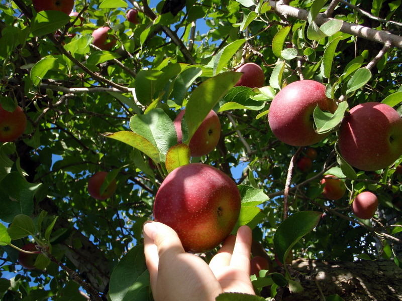

Fresh, Organic, and Healthy.
100% Organic, vivid varieties of apples grown in Nyanga, Zimbabawe.
ABOUT US
Looking for a crisp and refreshing snack? Look no further than the beloved apples grown in Nyanga, Zimbabwe. Apples are a true gift from nature, offering a delightful combination of tantalizing flavors and numerous health benefits. With their vibrant colors and enticing aromas, these apples have captured the hearts of people all around the world. Bite into a juicy Nyanga apple, and you'll experience a burst of sweetness, tanginess, or a perfect balance of both, depending on the variety. From the classic Granny Smith with its tartness to the Honeycrisp with its mouthwatering juiciness, there's an apple for everyone's taste buds. But these apples are not just about their taste. Packed with essential nutrients, fiber, and antioxidants, they contribute to a healthy lifestyle. They are low in calories and high in dietary fiber, making them an excellent choice for weight management and digestive health. The antioxidants found in Nyanga apples help fight off harmful free radicals, promoting overall well-being. Additionally, apples are a rich source of vitamin C, which supports a robust immune system. So, whether you enjoy them fresh, baked into a pie, or transformed into a refreshing juice, these Nyanga-grown apples are a versatile and delightful fruit that offers both flavor and nourishment. Embrace the goodness of Nyanga apples and let nature's bounty from Zimbabwe satisfy your cravings.
VARIETIES

Amber
This red, medium-sized fruit becomes fully ripe in mid-October. It is mostly grown in Shopian and Kulgam.

American Trel
A small, rounded, very crispy and sweet fruit variety that ripens in mid-September.

Red Delicious
A very popular and widely cultivated variety of apple that ripens in mid-September. Its flesh is greenish white, grainy and juicy.

Maharaej
A large apple with red and green color. It tastes a bit sour but sweetens with time and is available by late October.

Hazratbael
A quickly perishable variety that ripens in early July. It is the oldest variety of apples cultivated in the valley and is mostly consumed domestically

Golden Delicious
A variety with comparatively longer shelf life, it is crispy, juicy and has thick greenish-white flesh which turns golden upon ripening. It is available till January.
OUR SERVICE

Fresh
We deliver fresh apples with a 100% guarantee of freshness.

Fast
We deliver your orders as fast as possible, delivery procedure begins as soon as apple is plucked from tree.

Satisfying
We guarantee 100% customer satisfaction. We do our best to make your purchase experience smooth. But if we mess up somehow you will get compensated for every inconvenience.